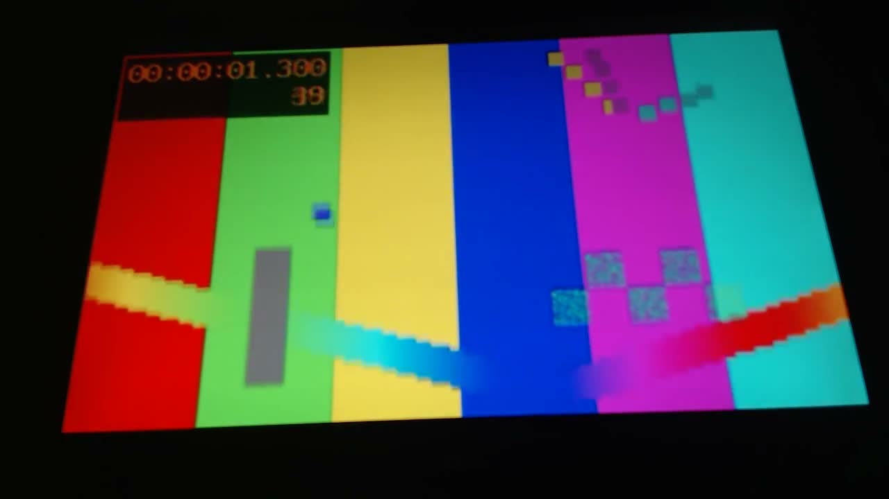
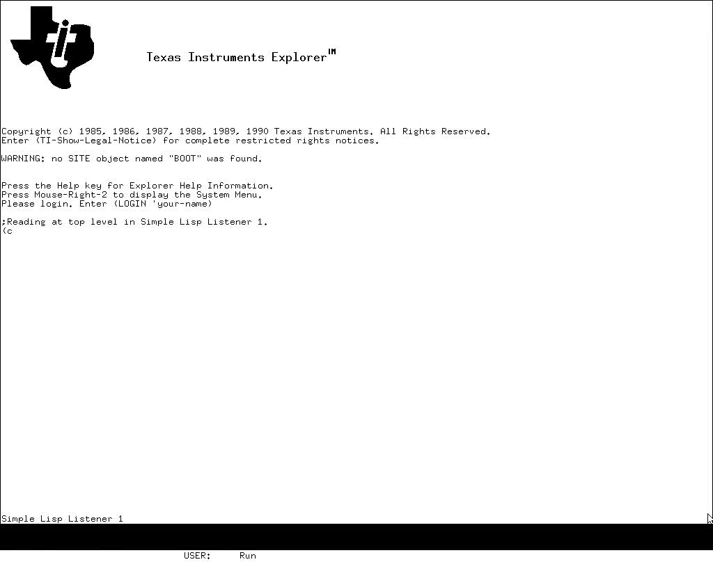

An operating system that boots nine architectures on bare metal spent this week learning to be an app. It runs natively on an iPhone, passes all eleven of its runtime tests on the device, and draws on a watch. Three long-lived branches land at once, carrying with them an actor runtime that the agent immediately moves onto. A Nostr relay gets written in a day because the test network was still using a Python script. And attestation, implicit in this project for twenty-nine issues, becomes explicit in three places — including the one that says what a hash is not.
Modus is a Lisp that owns its machine — page tables, interrupt vectors, the display controller. iOS is the opposite proposition: a signed app in a sandbox, where the kernel decides what you may map and a watchdog decides how long you may take. It now runs there.
Ran natively on an iPhone 15 Pro (iOS 26.6.2) with a free Personal Team: signed code, in place, PC-relative, data layout reserved — the kernel accepted segments spanning ~4 GB to ~15 GB without the extended-VA entitlement. All 11 tests pass on the device.
modus — 7d681818Those eleven are not a smoke test. They are the runtime’s own hard cases: hosted threads, thread-local collection, handler depth, stop-the-world, arena evacuation, slot reuse, the intern race, dynamic binding, closure escape. The same list that guards the bare-metal ports, run inside an App Store sandbox on a stock phone with a free developer account.
Three obstacles are worth naming because each is a fact about iOS rather than about Lisp.
An app must finish launching within twenty seconds or FrontBoard kills it —
0x8BADF00D, process-launch watchdog transgression — and the first
device runs lost every test that took longer; the shim now runs
UIApplicationMain on the main thread, with a delegate built through the
Objective-C runtime, and puts the image on a thread of its own. Linux gives the first thread a
TID equal to the PID and the runtime had believed it. And the phone wanted to auto-lock
mid-test.
Two days later the same image — JIT off, PC-relative, run in place — comes up on the watchOS Simulator and draws. watchOS publishes no UIKit, so the main thread runs a SwiftUI app instead, exporting the same four entry points the phone uses: info, fill, present, next event. The image does not know which it is on.
Three branches that had been running in parallel — multi-arch,
macos-hosting, operandi-on-modus —
land on main over two days, in merges whose subjects read like a reconciliation
rather than a fast-forward: the hosted actor runtime, selective receive, per-computation
specials — reconciled onto macos-hosting’s lock-free interning.
The largest piece is an actor runtime that actually exists for programs to use, where before there was a scheduler core and a pile of hand-wired self-tests:
net/actors.lisp was a scheduler core and every hosted use of it a selftest wired by hand; there was no runtime a program could use. This adds one. … AN ACTOR HAS ITS OWN WINDOW. Handler frames, bindings, the MV buffer, the stop-the-world words and the shared-store guard’s region words.
modus — c37308c9M:N actors on native threads, each with its own garbage-collected region carved out of region zero, messages passed by copy, blocking receive that hands the thread back, and selective receive. Which is the Erlang shape, and the point of it shows up immediately downstream: operandi’s agent protocol switches from shared-memory threads to actors in a single commit, and natrium makes its default random generator per-computation so that threads and actors share no state.
The follow-ups are where the real cost of concurrency shows. A thread’s result becomes a message, and an error ends the thread rather than the process. A leaked runtime lock stops the process instead of hanging it. A stuck collection stops loudly instead of deadlocking. A store that would share a worker’s object is refused outright. Actor stacks get two megabytes and a guard page, so an overflow no longer lands in a neighbour. Each of those is a decision to fail visibly rather than mysteriously, which is the only way a concurrent runtime stays debuggable.
And the thread from № 29 closes. Last week’s
audit left exactly one route for C into the agent: cl-sqlite. This week sqlite-pure grows a
drop-in — the same SQLITE package, a 194-case transcript that must print
identically, and cl-sqlite’s own suite passing, its concurrent-insert test included
— and Modus’s ASDF aliases sqlite to it when it can be found. The
dependency name in operandi’s system definition never changes. The C underneath it
does.
№ 29 reported Modus learning to boot as an encrypted guest whose launch is measured, and noted that nothing had yet executed a VMGEXIT. This week the idea arrives in two more repositories, and in both of them the interesting content is the hedging.
kiln gains kiln image, a recipe that produces two measurable files on this
machine: the bare x86-64 UEFI image that an SNP launch would measure, and a heap snapshot taken
after ql:quickload of every requested system, pulled out of guest RAM over QEMU’s
monitor and proven by booting the same image with the core back in RAM and answering a
probe. A manifest records every hash and pin. Where a pin is missing, the recipe says so
and archives HEAD rather than claiming the pin it does not have.
Then the next commit, which is the one worth the section title:
Two runs of the same recipe on the same image gave cores of 149,572,592 and 149,641,312 bytes, so the README says what the manifest’s core hash is and is not.
kiln — 6599a1d, the core is attested by hash, not reproducibleSixty-eight thousand bytes apart, twice from one recipe. A heap snapshot is not a build artefact; it is a photograph of a running machine, and photographs differ. So the manifest hash identifies this core and attests nothing about anyone else’s. The image beside it, built by a compiler, is a different kind of object and gets the stronger claim. A project that wanted to look good would have shipped one number and let the reader assume.
cl-deposits takes the same idea the other way, into economics. Its trust model asks what hardware attestation is actually worth when operators can be compromised, and answers with a simulation rather than an assertion:
world broken R=0.5 R=0.7 R=0.8 R=0.9
nobody attested — 0.27 0.24 0.18 0.12
80% attested, random seats 1 platform 0.90 0.63 0.57 0.30
80% attested, random seats 1 vendor 0.48 0.42 0.33 0.18
7 attested, ≤1/platform, ≤3/vendor none 0.99 0.99 0.99 0.99
The author put the same thought more plainly on nostr the same day — “I’ve been thinking about TEEs wrong. They’re not perfect, but what if you only need a majority of them to be?” — and the commit’s own summary is the thesis: attestation as a trust root that degrades to economics. A fully attested quorum with per-platform and per-vendor seat caps survives a vendor break plus two platform breaks at any coalition size — and when it stops surviving, it falls back to the collateral arithmetic rather than to nothing. Attestation that is assumed unbreakable is a single point of failure; attestation priced as one input among several is a defence.
cl-deposits accounts for nearly half the week, and almost all of it is adversarial. Last issue it had written down nine claims its specification makes and built the attack for the first. This week it builds the rest and runs them against a persistent regtest network: vault theft, censorship holds, withheld reveals, rollback depth, dereliction, veto-pledge fraud on mixed quorums, collusion with fresh keys, relay fault injection.
What makes it convincing is that the scenarios are hostile to their own harness. Nodes must arm themselves rather than being armed; scenarios form their own ledgers and deposits rather than borrowing the soak’s; they pick clean actors and report key taint; a dispute is run all the way to on-chain confiscation and the test waits for the chain. The findings file is kept alongside, and it records a Rust confiscation hang in the reference implementation — the thing being tested against — as readily as its own bugs.
The design findings are the ones to read. Confiscation: replacement collateral is an eligibility cut, not a veto. A shared eligibility vector: one survivor takes custody; none survive means re-arm. Members refuse to cosign for a deposed operator. Each is a rule discovered by playing the protocol adversarially rather than by reading it.
And the week’s new repository exists because of a line in that test network. beacon is a Nostr relay in pure Common Lisp — append-only event log, in-memory unboxed indexes, sharded fanout, an fsync policy, no step proportional to store size, benchmarks in the README — written on 1 October in six commits. The commit that uses it says why it was written: Devnet relay: beacon (pure CL) replaces relay.py. That is the fourth repository in two issues created to delete a dependency, after seal, quill and sqlite-pure.
sqlite-pure, besides the drop-in, spends the week in the query planner: subquery
flattening, WHERE-term push-down, HAVING-to-WHERE, an OR optimisation with IN rewriting and
multi-index OR, a LIKE optimisation, and RIGHT/FULL JOIN regressions
fixed to match SQLite’s own plans — which matters because the plan decides the row
order a query sees.
seal makes verification faster off SBCL — linear base64, a cached trust store, Montgomery ECDSA — and then per-computation caches so the actor runtime can use it safely. glass gets a Music window with a station list, and fixes the recognizer hearing the music it is playing; spool learns Icecast and Shoutcast streams; chord loads and runs Kokoro voices, and the voice and speed become run-time choices. The desktop acquired a radio this week, which is not the most consequential thing in this issue and is probably the most pleasant.
And the Pi work from the last three issues kept going underneath all of it: clips now reach the board over HTTP, with the loader refusing a truncated body rather than handing the decoder a short buffer; a green-screen regression turned out to be lossy display-list stores through the non-cacheable window; and the boot path paints a test pattern the moment the display plane comes up. On 28 September it was filmed:


The Component :REEL not found break is now twenty-five days old. webp-pure and
webrtc-media have been red since 8 September, warren since the 9th, and loom and weft fail the
same way because they depend on webp-pure. Five of six red badges are still that one unfixed
sibling-checkout list; the sixth is operandi’s gate, reverted thirty-three days ago.
52 repositories, 37 green, 6 failing, 9 with no CI. cl-deposits went green this week and now installs beacon and secp256k1-fast for its regtest smoke, which is the gate doing exactly what gates are for. beacon, quill and sqlite-pure — three repositories created in two weeks, two of them now load-bearing for a test network — have nothing watching them.